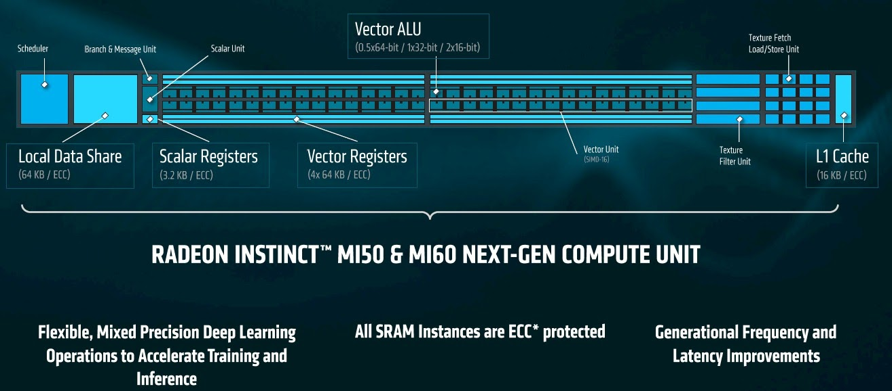

Last Updated: 2020-18-09
Over the last few decades, there has been increased interest in using Graphics Processing Units (GPUs) to perform general purpose computing tasks. This practice is often referred to as General Purpose GPU (GPGPU) programming. Using GPUs for general purpose computing tasks gained attention primarily due to the inherent scale of parallelism within GPU hardware that enables faster computation and a reduction in the time-to-solution.
Since GPUs were designed for handling graphics rendering tasks, implementing general purpose routines, like those for numerically solving partial differential equation or optimizing the weights in a neural network, was time-consuming and often error-prone. The continued interest and success of GPGPU computing led to the development of more user-friendly application programming interfaces (APIs) that allow developers to focus more attention on implementing algorithms using the syntax of compiled languages they are more familiar with, rather than thinking about how to express their algorithm in terms of graphics operations.
Before diving into GPU programming APIs and how they can help you accelerate scientific applications, let's first discuss the basics of modern GPU accelerated compute platforms to help you better understand the software development problems they help solve.
Basics of GPU Accelerated Platforms
A GPU is an additional hardware component that can perform operations alongside a CPU. GPUs are either integrated into the motherboard or silicon dye alongside a CPU, or are made available through a dedicated interconnect, called the Peripheral Component Interconnect (PCI). The PCI is a physical hardware component that allows data to be transmitted between the CPU and GPU.

On GPU-Accelerated High Performance Computing platforms, you will primarily encounter servers with one or more dedicated GPUs. Dedicated GPUs have an isolated set of compute cores and their own memory space, distinct from the CPU and the CPU's memory space. The figure above illustrates simple conceptual model of a server with a CPU connected to a single GPU. This conceptual model is purposefully simplified to highlight the first hurdle that all new GPU developers must overcome : managing CPU and GPU memory spaces.
On most modern GPU accelerated platforms, migrating data between the CPU and GPU can be a bottleneck. This is caused by limits in the PCI Bus peak bandwidth. Because of this, developers must be mindful to minimize the amount of data transfer between CPU and GPU for optimal performance.
A more subtle aspect of GPU programming, driven by the fact that a GPU is a separate hardware component from the CPU, is the potential for asynchronous activities between the CPU and GPU. When developing a GPU accelerated application, kernels that can execute on the GPU are scheduled for execution by the CPU. Most modern GPU programming APIs provide calls that can force the issuing CPU process to stop and wait for the GPU kernel execution. Further, when a CPU issues multiple kernel execution instructions, these APIs can allow for serialized or asynchronous executions.
GPU Hardware
GPUs for high performance computing are available from three different vendors : AMD, Nvidia, and Intel. Currently, each has their own terminology for describing the architecture and microarchitecture. We'll briefly describe a conceptual model of a GPU and relate terminology between vendors.
In general, GPUs are comprised of a number of compute units (AMD) or streaming multiprocessors (Nvidia), "Global" GPU RAM, and a Work Group Distributor (AMD) or Workload Manager (Nvidia). On Nvidia hardware, the Workload Manager schedules work to the streaming multiprocessors, which have a Same-Instruction-Multiple-Thread (SIMT) scheduler, Cache memory, registers, and a set of CUDA Cores. On AMD Hardware, the Work Group Distributor schedules work across the compute units, which each have a scheduler, local data share, L1 Cache, a mix of scalar and vector registers, and a Vector Arithmetic Logic Unit (ALU).
GPU models are distinguished based on their microarchitecture and other characteristics, such as the number of compute units, PCI compatibility, memory and compute clock frequencies, and global memory size. For AMD GPUs, the microarchitecture refers to the architecture of the compute units.
Below is a conceptual diagram of a single compute unit in AMD's Vega 20 micro-architecture. This micro-architecture is at the core of the Radeon Instinct MI50 & MI60 GPUs and the Department of Energy's newest exascale systems, El Capitan and Frontier. On AMD GPUs, each compute unit has 64 Vector ALU's.
The table below summarizes some of the characteristics of a few of the latest lineup of AMD Radeon Instinct GPUs. In this table, we are showing GPUs with varying microarchitecture, number of compute units, and global GPU memory size. The GPU's memory clock rate and compute clock rate, together with the type of memory and the number of Vector ALU's dictate the peak performance and memory bandwidth.
Microarchitecture | Vega20 | Vega10 | Fiji |
Compute Units | 60 | 64 | 64 |
Peak FP16 | 26.5 TFLOPS | 24.6 TFLOPS | 8.19 TFLOPS |
Peak FP32 | 13.3 TFLOPS | 12.29 TFLOPS | 8.19 TFLOPS |
Peak FP64 | 6.6 TFLOPS | 768 GFLOPS | 512 GFLOPS |
Memory Size | 16-32 GB (HBM2) | 16 GB (HBM2) | 4 GB (HBM) |
Memory Bandwidth | 1 TB/s | 484 GB/s | 512 GB/s |
Now that you have some awareness of GPU hardware, let's talk about how we program GPUs to accelerate scientific applications.
GPU Programming APIs
In general, a GPU programming API must provide routines that developers can leverage to allocate and deallocate memory on the GPU, copy memory between the CPU and GPU, and control kernel execution. GPU programming APIs can be classified into two categories
- Directive-Based
- Kernel-Based
When programming with Directive-Based APIs, developers will provide "hints" to the compiler about how to offload sections of code to the GPU. In this approach, the compiler will then generate code for allocating/deallocating memory, copying memory between host and device, and how to parallelize sections of code. This method of GPU programming has the benefit of being able to start running on GPUs quickly with little effort. Additionally, management of CPU and GPU memory is handled "behind-the-scenes" by the compiler and can help limit code complexity. In this case, compilers will more often make decisions that ensure correctness, rather than optimize performance. Because of this, performance tuning often requires verbose compiler hints to limit superfluous data transfer between CPU and GPU and sometimes require alteration of the CPU code.
When programming with Kernel-Based APIs, developers are solely responsible for creating and managing both CPU and GPU memory spaces. Additionally, developers must write compute kernels that are consistent with their CPU counterparts and issue explicit calls to launch routines when needed. While this approach increases code complexity and has a higher barrier to entry than Directive-Based approaches, the developer has precise control over the performance of GPU kernels. Additionally, developers can control when data transfers between CPU and GPU occur, allowing for a clear path to minimize time spent crossing the PCI Bus.
The table below provides a breakdown of popular GPU programming APIs, their type, which compilers expose the API, and which GPU platforms the API allows you to program for. It's important to keep in mind that directive-based APIs yield varied performance across compilers. Further, Fortran compilers that are 2003 compliant and above are able to leverage ISO_C_BINDING to expose C/C++ routines that can be called from Fortran source code, allowing C/C++ APIs to be made available in Fortran through C-interoperability.
API | Type | Compiler Support | Platforms |
Kernel | Hipcc (hcc/nvcc) | AMD, Nvidia | |
Directive | AOMP (Clang/Flang), GCC 10, XL | AMD, Nvidia | |
CUDA | Kernel | nvcc | Nvidia |
CUDA-Fortran | Kernel | PGI | Nvidia |
OpenACC | Directive | GCC 9, PGI, XL | Nvidia |
Kernel | All | All |
ROCm, HIP, and OpenMP : Portable, Open-Source Platforms for GPU Acceleration
AMD, Nvidia, and Intel all design and manufacture GPUs for High Performance Computing. Currently, there is no unified machine code for GPUs that all vendors currently support on the hardware they produce. This has resulted in portability issues and the common "vendor-lock" problem, where HPC developers spend a significant amount of effort to port their application to a specific GPU and then lose the ability to easily transition to other hardware.
As we have just shown, there are a number of APIs available that support GPGPU programming. Currently, this ecosystem is at a turning point where APIs are shifting towards meeting open-source and portability standards that enable developers to leverage GPU hardware from multiple vendors and even multi-core CPU platforms all with the same code.
ROCm
AMD is currently leading this effort through its ROCm platform. ROCm is AMD's open source platform for GPU accelerated computing that covers everything from the device driver and runtimes, to compilers, programming models and libraries. It also supports different frameworks and applications and comes with a complete set of developer tools for debugging and profiling your application to help you get the best possible performance.
The diagram below summarizes the ROCm ecosystem that helps bridge the gap between HPC and Machine Learning applications and the variety of compute hardware targets, including GPUs.
HIP
For Kernel-based GPU programming, ROCm includes the Heterogeneous-Compute Interface for Portability (HIP) and OpenCL. The Heterogeneous Interface for Portability (HIP) is AMD's dedicated GPU programming environment for designing high performance kernels on GPU hardware. AMD provides hipify tools that will convert CUDA to HIP, enhancing the performance portability of your GPU accelerated applications. The interface design of the API allows your new single source application to be compiled to target either AMD or NV hardware.
HIP is a C++ dialect, similar to CUDA, that allows for programming and AMD and Nvidia GPUs. HIP maintainers have plans to support Intel (XE) GPUs in future releases. The latest version of the ROCm package, now includes hipfort, a Fortran interface that exposes the HIP API through ISO C Binding. OpenCL is framework that is available through a C runtime API and is supported by AMD, Intel, and Nvidia GPUs and x86 CPUs. The ROCm platform provides an OpenCL runtime environment necessary for building portable, parallel applications that run on a variety of platforms.
OpenMP 5.0
For Directive-based GPU programming, ROCm includes the AOMP compilers for C/C++ and Fortran. The AOMP compilers are an extension of the LLVM-based Clang and Flang compilers that support the OpenMP 5.0 standard for multi-core CPU and GPU programming on both AMD and Nvidia GPUs.
GPU Accelerated Libraries
In addition to the programming APIs, ROCm includes portable accelerated HPC and Machine Learning libraries, such as rocBLAS, rocFFT, rocThrust, rocSparse, Tensorflow, PyTorch, MIOpen, and many others. All of these tools are provided under open-source licensing and made freely available to help you accelerate your time-to-science in a community driven ecosystem. These libraries are beneficial when you want to quickly and optimally leverage GPUs, without having to write GPU kernels yourself.
What you will build
In this codelab, we will focus on how to accelerate an application in C with OpenMP 5.0. You are going to work through transitioning a serial CPU-only mini-application to a portable GPU accelerated application, using OpenMP provided through the AOMP compilers.
What you will learn
- How to develop a GPU porting strategy using application profiles and call graphs.
- How to manage GPU memory with HIP.
- How to launch GPU accelerated kernels with OpenMP.
- How to build GPU accelerated C/C++ applications for AMD and Nvidia platforms with a simple Makefile.
- How to verify GPU memory allocation and kernel execution with the rocprof profiler.
What you will need
- A compute platform with AMD or Nvidia GPU(s)
- CUDA Toolkit 10 or greater (Nvidia platforms only)
- Linux operating system (e.g. Debian, Ubuntu, CentOS, or RHEL)
- Working installation of the AOMP compiler
- Basic Command-Line Linux Experience
- Working gcc compiler
In this section, we introduce the demo application and walk through building and verifying the example. It's important to make sure that the code produces the expected result as we will be using the CPU generated model output to ensure that the solution does not change when we port to the GPU.
This application executes a 2-D smoothing operation on a square grid of points. The program proceeds as follows
- Process command line arguments
- Allocate memory for smoother class - 5x5 stencil with Gaussian weights
- Allocate memory for function and smoothed function
- Initialize function on CPU and report function to file
- Call smoothing function
- Report smoothed function to file
- Clear memory
Code Structure
This application's src directory contains the following files
smoother.cpp: Defines a simple data structure that stores the smoothing operators weights and the routines for allocating memory, deallocating memory, and executing the smoothing operation.main.cpp: Defines the main program that sets up the 2-D field to be smoothed and managed file IO.Makefile: A simple makefile is to build the application binarysmoother.viz.py: A python script for creating plots of the smoother output
Install and Verify the Application
To get started, we want to make sure that the application builds and runs on your system using the gcc compiler. Once verified, you will modify the provided Makefile to use the AOMP compiler and verify the results.
- Clone the repository
$ git clone https://github.com/os-hackathon/amd-rocm-codelabs_example-codes- Build the smoother application. Keep in mind, the compiler is set to gcc by default in the provided makefile.
$ cd c++/smoother/src
$ make- Test run the example. The application takes two arguments. The first argument is the number of grid cells, and the second argument is the number of times the smoothing operator is applied.
$ ./smoother 1000 100
Visualize the output (Optional)
You can visualize the output with the provided viz.py python script. We recommend using virtual environments to install the script's dependencies
- Start a virtual environment
$ python3 -m venv env
$ source env/bin/activate- Install the required packages
(env)$ pip3 install -r requirements.txt- Execute viz.py
(env)$ python3 ./viz.pyThis script saves a figure to function.eps. This figure shows the initial 2-D function before smoothing on the top and the smoothed field on the bottom. An example of the visualized output from the smoother example program is shown in the image below for a grid with 100x100 cells. The initial field is shown on the top, and the smoothed field is shown on the bottom after 100 iterations. Increasing the number of iterations (the second argument) will enhance the amount of smoothing and will further blur the image.
Profile the Application
Before starting any GPU porting exercise, it is important to profile your application to find hotspots where your application spends most of its time. Further, it is helpful to keep track of the runtime of the routines in your application so that you can later assess whether or not the GPU porting has resulted in improved performance. Ideally, your GPU-Accelerated application should outperform CPU-Only versions of your application when fully subscribed to available CPUs on a compute node.
There are a number of open-source tools available for profiling C/C++ and Fortran applications, including Tau, Score-P, Vampir, and Scalasca. In this tutorial, we are going to generate a profile and call graph using gprof.
Create the profile
- Add -pg flag to the CFLAGS variable in the provided Makefile.
CFLAGS=-O0 -g -pg- Remove files from your previous build.
$ make clean- Make the smoother application
$ make- Run the application and obtain an overall timing. When the -pg flag is passed to the gcc compiler, executions of the application will create a file called gmon.out
$ time ./smoother 1000 10- Create the profile
$ gprof ./smoother gmon.out > profile.txtInterpret the profile and callgraph
gprof provides a flat profile and a summary of your application's call structure indicating dependencies within your source code as a call graph. A call tree depicts the relationships between routines in your source code. Combining timing information with a call graph will help you plan the order in which you port routines to the GPU.
The first section of the gprof output is the flat-profile. An example flat-profile for the smoother application is given below. The flat-profile provides a list of routines in your application, ordered by the percent time your program spends within those routines from greatest to least. Beneath the flat-profile, gprof provides documentation of each of the columns for your convenience.
% cumulative self self total
time seconds seconds calls ms/call ms/call name
95.24 1.16 1.16 10 116.19 116.19 smoothField
2.46 1.19 0.03 10 3.00 3.00 resetF
2.46 1.22 0.03 main
0.00 1.22 0.00 1 0.00 0.00 smootherFree
0.00 1.22 0.00 1 0.00 0.00 smootherInitLet's now take a look at at the call tree. This call tree has five entries, one for each routine in our program. The right-most field for each entry indicates the routines that called each routine and that are called by each routine.
For smoother, the first entry shows that main calls smoothField, resetF, smootherInit, and smootherFree. Further, the called column indicates that smoothField and resetF routines are shown to be called 10 times (in this case) by main. The self and children columns indicate that main spends 0.03s executing instructions in main and 1.19s in calling other routines. Further, of those 1.19s, 1.16s are spent in smoothField and 0.03 are spent in resetF.
index % time self children called name
<spontaneous>
[1] 100.0 0.03 1.19 main [1]
1.16 0.00 10/10 smoothField [2]
0.03 0.00 10/10 resetF [3]
0.00 0.00 1/1 smootherInit [5]
0.00 0.00 1/1 smootherFree [4]
-----------------------------------------------
1.16 0.00 10/10 main [1]
[2] 95.1 1.16 0.00 10 smoothField [2]
-----------------------------------------------
0.03 0.00 10/10 main [1]
[3] 2.5 0.03 0.00 10 resetF [3]
-----------------------------------------------
0.00 0.00 1/1 main [1]
[4] 0.0 0.00 0.00 1 smootherFree [4]
-----------------------------------------------
0.00 0.00 1/1 main [1]
[5] 0.0 0.00 0.00 1 smootherInit [5]
-----------------------------------------------Next steps
Now that we have a profile and an understanding of the call structure of the application, we can now plan our port to GPUs. Since we will use the AOMP compiler for offloading to GPUs, we want to first modify the Makefile to use the AOMP compiler. Then, we will focus on porting the smoothField routine and the necessary data to the GPU, since smoothField takes up the majority of the run time.
When we port this routine, we will introduce data allocation on the GPU and data copies between CPU and GPU. This data movement may potentially increase the overall application runtime, even if the smoothField routine performs better. In this event, we will then work on minimizing data movements between CPU and GPU.
Now that you've verified the smoother example application installs and runs successfully using the GCC compiler, you will make the transition to using the AOMP compiler. The AOMP compiler uses a branch of clang under-the-hood that is OpenMP 5.0 compliant. Before jumping straight into GPU offloading with OpenMP, you will take an incremental step to change the compiler and verify the application can be compiled and executed with the AOMP compiler. Once this is verified, you will then start the GPU offloading process.
Update the Makefile
- Starting from the
smoothermakefile (smoother/src/Makefile), insert the following block of code at the top of the makefile to help detect the location of AOMP. This block of code is borrowed from an AOMP example Makefile. Notice that this block set the C compiler to clang provided by AOMP.
CFLAGS=-O0 -g
LFLAGS=-lm
ifeq ("$(wildcard $(AOMP))","")
ifneq ($(AOMP),)
$(warning AOMP not found at $(AOMP))
endif
AOMP = $(HOME)/rocm/aomp
ifeq ("$(wildcard $(AOMP))","")
$(warning AOMP not found at $(AOMP))
AOMP = /usr/lib/aomp
ifeq ("$(wildcard $(AOMP))","")
$(warning AOMP not found at $(AOMP))
$(error Please install AOMP or correctly set env-var AOMP)
endif
endif
Endif
CC = $(AOMP)/bin/clang- The AOMP installation provides a bash utility called
mygputhat can help detect the GPU on your system. Once the AOMP path is known, you can use themygpuscript to detect the GPU target to offload to.
INSTALLED_GPU = $(shell $(AOMP)/bin/mygpu -d gfx900)
AOMP_GPU ?= $(INSTALLED_GPU)
ifeq (sm_,$(findstring sm_,$(AOMP_GPU)))
AOMP_GPUTARGET = nvptx64-nvidia-cuda
else
AOMP_GPUTARGET = amdgcn-amd-amdhsa
endif- For offloading sections of code to the CPU, you may also want to add a section to the Makefile that detects the CPU platform you are working on.
UNAMEP = $(shell uname -p)
AOMP_CPUTARGET = $(UNAMEP)-pc-linux-gnu
ifeq ($(UNAMEP),ppc64le)
AOMP_CPUTARGET = ppc64le-linux-gnu
endif- Next, you can append the OpenMP offload flags to the CFLAGS environment variable.
CFLAGS += -target $(AOMP_CPUTARGET) -fopenmp -fopenmp-targets=$(AOMP_GPUTARGET) -Xopenmp-target=$(AOMP_GPUTARGET) -march=$(AOMP_GPU)- If you are working on an Nvidia platform, you will need to add the CUDA runtime library (
-lcudart) to theLFLAGSvariable.
ifeq (sm_,$(findstring sm_,$(AOMP_GPU)))
CUDA ?= /usr/local/cuda
LFLAGS += -L$(CUDA)/targets/$(UNAMEP)-linux/lib -lcudart
endifVerify the application compiles and runs
Now that you have made the necessary modifications to the Makefile, it is time to re-compile and test the application. You also want to make sure that the application output is unchanged.
- Copy the existing output from your previous run to a reference directory.
$ mkdir reference
$ cp function.txt smooth-function.txt reference/- Re-compile the
smootherapplication.
$ make clean
$ make- Run the
smootherapplication with the same input parameters as before and compare the output with the reference output. You can use the diff command line tool to compare the new output with the reference output. If the files are identical, no output will be printed to screen.
$ ./smoother 1000 10
$ diff function.txt reference/function.txt
$ diff smooth-function.txt reference/function.txtNext Steps
Now that you've switched to using the AOMP compiler and have verified the application successfully compiles and runs and produces the correct output, you are ready to begin offloading to GPUs with OpenMP. In the next step, you will offload the smoothField and resetF routines using OpenMP directives.
In the smoother application, we have seen that the smoothField routine, called by main, takes up the most time. Within the main iteration loop in main.cpp, the resetF function is called to update the input for smoother for the next iteration.
You will start by offloading both the smoothField and resetF routines to the GPU using OpenMP directives (also called "pragmas"). In this section you will learn how to offload sections of code to the GPU and how to manage GPU data using OpenMP pragmas.
OMP Target Basics
With OpenMP, you can use the omp target directive to mark regions of code that you want the compiler to offload to the GPU. When you open an OpenMP target region, you can use the map directive to indicate variables that you want to copy to the GPU and from the GPU.
The example below shows how to open and close a target region that will be offloaded to the GPU. Pointers are created for variables arrayIn and arrayOut on the host. The map directives indicates that arrayIn will be copied to the GPU and arrayOut will be copied from the GPU to the CPU at the end of the target region. Note that, since arrayIn and arrayOut are pointers, we must use array section notation to properly map the arrays.
int N = 1000;
float *arrayIn;
float *arrayOut;
arrayIn = (float*)malloc( N*sizeof(float) );
arrayOut = (float*)malloc( N*sizeof(float) );
// Initialization routines ... //
.
.
// End Initialization routines
#omp pragma target map (to: arrayIn[0:N]) map (from: arrayOut[0:N])
{
.
.
}OMP Teams & Parallel
Within a target region, with no other specifications, a single thread of execution is launched on the GPU. However, GPUs are capable of running thousands of threads simultaneously. Threads on GPUs are scheduled to run on multiple Compute Units (AMD) or Streaming Multiprocessors (Nvidia) in groups of 64 (AMD) or 32 (Nvidia) called Wavefronts (AMD) or Warps (Nvidia). Modern GPUs are capable of executing many Wavefronts/Warps at any given time.
Before the teams directive was introduced in OpenMP 4.0, parallelization was limited to parallelizing with a single group of threads. Since OpenMP 4.0, the teams directive can be used to express another dimension of parallelism that is appropriate for GPUs.
The teams directive creates a "league" of teams that have, by default, a single thread. Each team executes instructions concurrently. The parallel directive creates multiple threads within each team. The number of threads can be set with the optional num_threads clause after the parallel directive. On a GPU, the number of threads per team is ideally a multiple of the Wavefront/Warp size (64 or 32 threads).
This example shows how to parallelize a for-loop with parallel teams, where each team has 256 threads.
int N = 1000;
float *arrayIn;
float *arrayOut;
arrayIn = (float*)malloc( N*sizeof(float) );
arrayOut = (float*)malloc( N*sizeof(float) );
#omp pragma target map (to: arrayIn[0:N]) map (from: arrayOut[0:N])
{
#pragma omp teams parallel for num_threads(256)
for( int i = 0; i<N; i++){
arrayOut[i] = 2.0*arrayIn[i];
}
}Offload smoothField
- Open
smoother.cand navigate to thesmoothFieldroutine. Open an OpenMP target region before the start of the first loop insmoothFieldand map the necessary map directives to copysmoother->weightsandfto the GPU andsmoothFto and from the GPU.
#pragma omp target map(to:smoothOperator->weights[0:N*N], f[0:nX*nY]) map(smoothF[0:nX*nY])- Use a
teams parallel fordirective with acollapse(2)clause to parallelize the outer two loops.
#pragma omp target map(to:smoothOperator->weights[0:N*N], f[0:nX*nY]) map(smoothF[0:nX*nY])
{
#pragma omp teams distribute parallel for collapse(2) num_threads(256)
for( int j=buf; j < nY-buf; j++ ){
for( int i=buf; i < nX-buf; i++ ){
smLocal = 0.0;
for( int jj=-buf; jj <= buf; jj++ ){
for( int ii=-buf; ii <= buf; ii++ ){
iloc = (i+ii)+(j+jj)*nX;
ism = (ii+buf) + (jj+buf)*N;
smLocal += f[iloc]*smoothOperator->weights[ism];
}
}
iel = i+j*nX;
smoothF[iel] = smLocal;
}
}
}- Re-compile the
smootherapplication.
$ make- Run the
smootherapplication with the same input parameters as before and compare the output with the reference output. You can use the diff command line tool to compare the new output with the reference output. If the files are identical, no output will be printed to screen.
$ time ./smoother 1000 10
real 0m2.767s
user 0m1.568s
sys 0m1.057s
$ diff function.txt reference/function.txt
$ diff smooth-function.txt reference/function.txtOffload resetF
- Open
smoother.cppand navigate to theresetFroutine. Open an OpenMPtargetregion before the start of the first loop inresetFand map the necessary map directives to copysmoothFto the GPU andfto and from the GPU.
#pragma omp target map(to: smoothF[0:nx*ny]) map(f[0:nx*ny])- Use a
teams parallel fordirective with acollapse(2)clause to parallelize the outer two loops.
#pragma omp target map(to: smoothF[0:nx*ny]) map(f[0:nx*ny])
{
#pragma omp teams distribute parallel for collapse(2) num_threads(256)
for( int iy=buf; iy<ny-buf; iy++ ){
for( int ix=buf; ix<nx-buf; ix++ ){
iel = ix + nx*iy;
f[iel] = smoothF[iel];
}
}
}- Re-compile the
smootherapplication.
$ make- Run the
smootherapplication with the same input parameters as before and compare the output with the reference output. You can use the diff command line tool to compare the new output with the reference output. If the files are identical, no output will be printed to screen.
$ time ./smoother 1000 10
real 0m2.970s
user 0m1.528s
sys 0m1.228s
$ diff function.txt reference/function.txt
$ diff smooth-function.txt reference/function.txt- You can profile the application using the rocprof profiler. To profile OpenMP accelerated applications, you will need to set the flags
--hsa-trace --obj-tracking on. It is also helpful to enable the summary statistics using the--statsflag.
$ rocprof --hsa-trace --obj-tracking on --stats ./smoother 1000 10
$ cat results.stat.csv
"Name","Calls","TotalDurationNs","AverageNs","Percentage"
"__omp_offloading_801_440b81_smoothField_l67.kd",10,30603997,3060399,78.4420113965
"__omp_offloading_801_440b81_resetF_l48.kd",10,8410807,841080,21.5579886035Next steps
You've successfully offloaded two routines to the GPU. However, you may have noticed that the runtime did not improve much, and may have even gotten worse, after you offloaded the second routine (resetF). At the start and end of each target region, the application is copying data between the CPU and GPU. You can see this behavior in the trace profile shown above. Ideally, you want to minimize data movement between the host and device for optimal performance.
In the next section, you will learn how to control when data is allocated and moved to and from the GPU. This will help you minimize data copies between the host and device that often become bottlenecks for GPU accelerated applications.
In this section you will learn how to use unstructured data directives with OpenMP to control when data is copied to and from the GPU.
In the smoother application, there are two routines within a main iteration loop, smoothField and resetF. Both routines operate on data stored in two arrays, f and smoothF.
for( int iter=0; iter<nIter; iter++){
// Run the smoother
smoothField( &smoothOperator, f, smoothF, nx, ny );
// Reassign smoothF to f
resetF( f, smoothF, nx, ny, buf );
}Additionally, the smoothField routine requires the smoothOperator->weights array in order to calculate smoothF from f. Currently, target regions within smoothField and resetF copy these arrays to and from the GPU, before and after executing the routine instructions in parallel on the GPU; this is also done every iteration.
OMP Enter/Exit Data
Ideally, we want to have all of the necessary data copied to the GPU before the iteration loop and have smoothF copied from the GPU after the iteration loop. This can be achieved using the target enter data and target exit data directives.
Each directive is a standalone directive that can be used to allocate or deallocate memory on the GPU and copy data to or from the GPU. A typical usage is to use the target enter data directive to allocate device memory after allocation on the host and to use the target exit data directive to free device memory before freeing memory on the host. Then, you can use the target update directive to manage updating host and device data when needed.
In this example below, the enter data directive is used to allocate device memory for arrayIn and arrayOut. Before reaching the main block of code, the target update directive is used to update arrayIn on the device. At the end of this region of code, the target update directive is used to update arrayOut on the host. At the end of the example code, the exit data directive is used to free device memory before freeing the associate host pointer.
int N = 1000;
float *arrayIn;
float *arrayOut;
arrayIn = (float*)malloc( N*sizeof(float) );
arrayOut = (float*)malloc( N*sizeof(float) );
# omp pragma target enter data map(alloc:arrayIn[0:N], arrayOut[0:N])
// Initialization routines ... //
.
.
// End Initialization routines
#omp pragma target update to(arrayIn[0:N])
{
// Execution block
.
.
}
#omp pragma target update from(arrayOut[0:N])
.
.
# omp pragma target exit data map(delete:arrayIn[0:N], arrayOut[0:N])
free(arrayIn);
free(arrayOut);Transition to enter/exit data directives
In the smoother application, we want to explicitly control data movement for f, smoothF, and smoothOperator->weights. You will work in main.cpp to insert calls to allocate, update, and deallocate device memory for f and smoothF. To handle smoothOperator->weights, you will work in smoother.cpp to allocate, update, and deallocate device memory.
- Open main.cppand find where
fandsmoothFare allocated memory. Just after themalloccalls, add atarget enter datadirective to allocate device memory forfand smoothF.
// Allocate space for the function we want to smooth
f = (real*)malloc( nElements*sizeof(real) );
smoothF = (real*)malloc( nElements*sizeof(real) );
#pragma omp target enter data map(alloc: f[0:nElements], smoothF[0:nElements])- Add a
target update todirective to copyfandsmoothFdata to the GPU just before the main iteration loop and add atarget update fromdirective to copysmoothFfrom the GPU just after the main iteration loop.
#pragma omp target update to(f[0:nElements], smoothF[0:nElements])
for( int iter=0; iter<nIter; iter++){
// Run the smoother
smoothField( &smoothOperator, f, smoothF, nx, ny );
// Reassign smoothF to f
resetF( f, smoothF, nx, ny, buf );
}
#pragma omp target update from(smoothF[0:nElements])- Add a
target exit datadirective to deallocate device memory held byfand smoothF before callingfreeat the end ofmain.cpp.
// Free space
#pragma omp target exit data map(delete:f[0:nElements],smoothF[0:nElements])
free(f);
free(smoothF);- Save
main.cppand opensmoother.cpp. In thesmootherInitroutine, add atarget enter datadirective to allocate device memory forsmoothOperator->weights.
smoothOperator->dim = N;
smoothOperator->weights = (real*)malloc( N*N*sizeof(real) );
#pragma omp target enter data map(alloc: smoothOperator->weights[0:N*N])- Add a target update directive for
smoothOperator->weightsat the end of thesmootherInitroutine, after the weight values have been assigned.
for( int j=0; j < N; j++ ){
for( int i=0; i < N; i++ ){
smoothOperator->weights[i+j*N] = smoothOperator->weights[i+j*N]/wsum;
}
}
#pragma omp target update to(smoothOperator->weights[0:N*N])- Add a
target exit data directiveto deallocate device memory held bysmoothOperator->weightsin the smootherFree routine.
void smootherFree( struct smoother *smoothOperator )
{
#pragma omp target exit data map(delete: smoothOperator->weights[0:smoothOperator->dim*smoothOperator->dim])
free( smoothOperator->weights );
}- Re-compile the
smootherapplication.
$ make- Run the
smootherapplication with the same input parameters as before and compare the output with the reference output. You can use the diff command line tool to compare the new output with the reference output. If the files are identical, no output will be printed to screen.
$ time ./smoother 1000 10
real 0m2.689s
user 0m1.496s
sys 0m1.052s
$ diff function.txt reference/function.txt
$ diff smooth-function.txt reference/function.txtIn this codelab, you learned how to port serial CPU-only routines in C to GPUs using OpenMP. To do this, you used target directives to offload regions of code to the GPU. You used teams parallel for directives to parallelize nested loops across teams of SIMD threads.
To reduce data copies between host and device, you applied unstructured OpenMP data directives to explicitly manage when memory is allocated/deallocated on the GPU and when data is copied between to and from the GPU.
In the process of doing this, you practiced a strategy for porting to GPUs that included the following steps to make incremental changes to your own source code :
- Profile - Find out the hotspots in your code and understand the dependencies with other routines
- Plan - Determine what routine you want to port and what data needs to be copied to and from the GPU.
- Implement & Verify - Insert the necessary OpenMP directives, compile the application, and verify the results.
- Commit - Once you have verified correctness and the expected behavior, commit your changes and start the process over again.
Provide Feedback
If you have any questions, comments, or feedback that can help improve this codelab, you can open an issue on the os-hackathon/amd-rocm-codelabs Github repository.